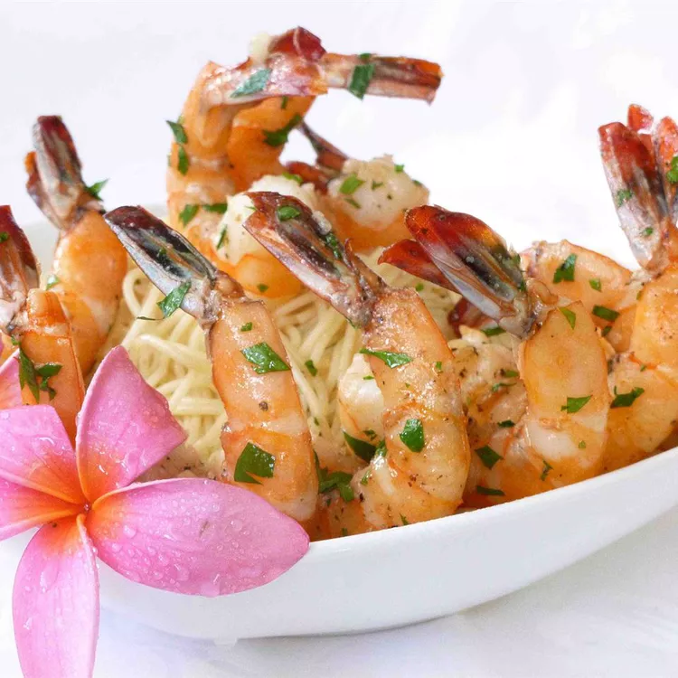

How to Make Shrimp Scampi?

The Ingredients
- 1 (8 ounce) package angel hair pasta
- ½ cup butter
- 1 pound shrimp, peeled and deveined
- 4 cloves minced garlic
- ¼ teaspoon ground black pepper
- ¾ cup grated Parmesan cheese
- 1 tablespoon chopped fresh parsley
Steps to make the Shrimp
- Bring a large pot of lightly salted water to a boil. Cook angel hair pasta in the boiling water, stirring occasionally, until tender yet firm to the bite, 4 to 5 minutes. Drain; transfer to a serving bowl and keep warm.
- Melt butter in a large saucepan over medium heat. Stir in shrimp and garlic. Cook and stir until shrimp turns pink, 3 to 5 minutes. Stir it with the pepper; bring to a boil. Cook and stir for 30 seconds.
- Pour shrimp with sauce over pasta in the serving bowl; toss well. Sprinkle with Parmesan cheese and parsley.
Nutrition Facts(per serving)
- Calories - 606
- Fat - 31g
- Carbs - 36g
- Protein - 35g